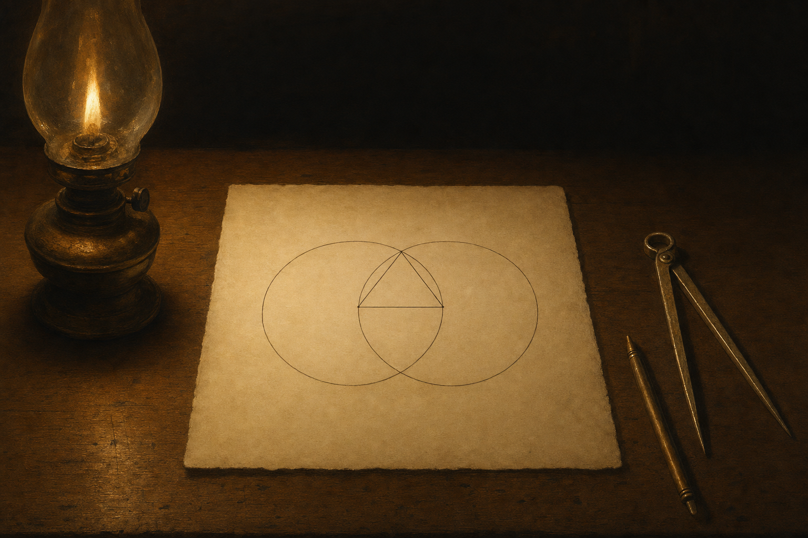
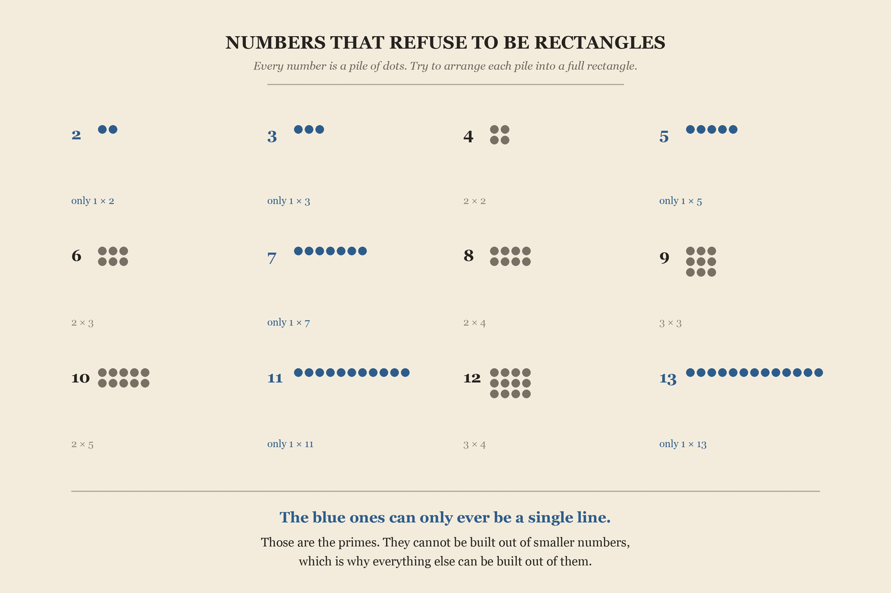
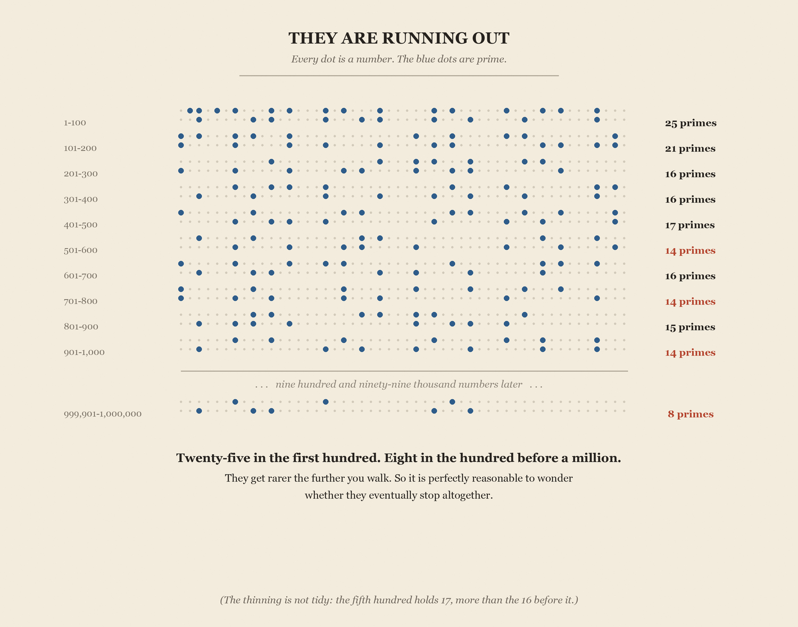
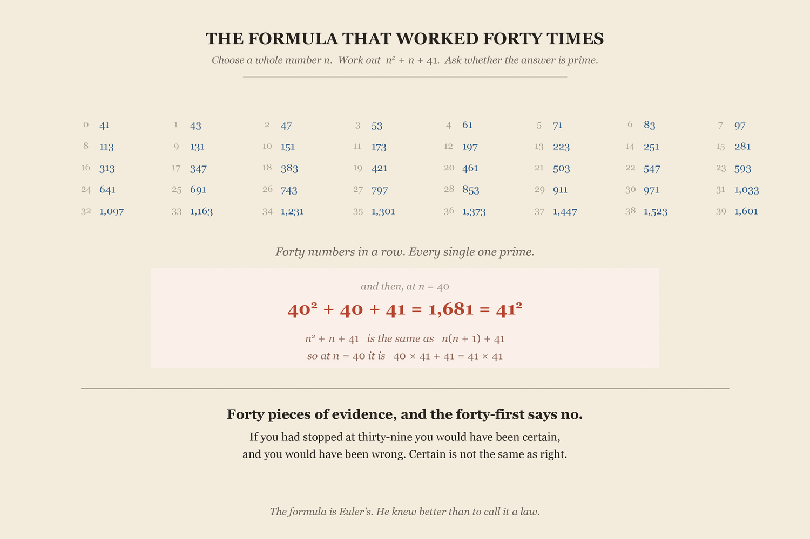

You know the sun will come up tomorrow.
Stop for a moment and ask how you know it. Not whether — how.
The answer is that it always has. It came up this morning, and yesterday morning, and on every morning anyone has ever recorded. That is an enormous pile of evidence.
And a pile of evidence, however enormous, is still a bet.
Here is why that word is fair. For centuries everyone in Europe knew that swans were white. They knew it exactly the way you know about the sunrise: every swan anyone had ever seen was white, and a great many people had looked at a great many swans. Then European ships reached Australia, and there were black ones.
Nothing had gone wrong with the reasoning. The reasoning was good. It simply wasn't the kind of reasoning that can ever finish. No number of white swans rules out the next one being black, and no number of sunrises rules out a morning that doesn't come.
Almost everything you know works this way. What medicines do. What the weather will be. What happens when you drop something. All of it rests on evidence, which means all of it is, in principle, revisable — and that is not a criticism. It is how anyone learns anything about the world.
But not everything you know works this way.
Nobody checks whether two and two might come to five somewhere far out among the enormous numbers. Not because we have tested it often enough to be satisfied — but because testing is not what is holding it up.
A pile of evidence, however enormous, is still a bet.
This essay is about that second kind of knowing — and it ends with you owning a piece of it. One specific thing, worked out around 300 BC, that you will still know is true when you are old.
Before we can promise anything, we need something to promise about.
Take a number of dots — say twelve — and try to arrange them into a full rectangle. Twelve is easy: three rows of four. Fifteen works too: three rows of five. Sixteen makes a neat square.
Now try thirteen. Or seven. Or eleven. You can put them in a single straight line, and that is the only thing you can do with them. There is no arrangement of thirteen dots into equal rows except one row of thirteen. The number refuses.

Those stubborn numbers are called primes. A prime is a whole number greater than 1 that cannot be made by multiplying two smaller whole numbers together. The first few are 2, 3, 5, 7, 11, 13.
They matter far more than their definition suggests. Because primes cannot be broken down, every other number can be built up out of them — and in exactly one way. That is why people call them the atoms of arithmetic. Everything else in the number system is made of these, and of nothing else.
12 is 2 × 2 × 3, and there is no other set of primes that multiplies to 12. Not one. This is true of every number, however large — each has exactly one recipe. Break a number down far enough and you always land on the same handful of primes.
Now here is a fact about the primes that ought to worry you.
Count how many there are in the first hundred numbers. Twenty-five — a quarter of everything. Count the second hundred: twenty-one. The third: sixteen.
They are thinning. And they keep thinning. By the time you reach the hundred numbers just below a million, there are eight left.

Notice, because it matters, that the thinning is not tidy. The fifth hundred holds seventeen primes — more than the sixteen in the hundred before it. This is a drift, not a rule.
But the drift is real and it does not stop, and that raises a perfectly sensible question. If they keep getting rarer, do they eventually run out altogether? Is there a last prime somewhere — some enormous number beyond which every single number can be broken into smaller pieces, and the atoms of arithmetic simply stop?
It is not a silly thing to believe. Everything in the evidence points that way.
They get rarer the further you walk. Do they eventually stop?
Suppose you decided to settle the question by looking.
You start at 2 and work upward, testing each number, writing the primes in a ledger. You are patient. You get help. You get a great deal of help — every mathematician alive, and then every computer ever built.
You will find a great many primes. Computers have now gone far past a trillion. And you will not have answered the question, not even slightly.
The trouble is not that checking is slow, or that the numbers are big, or that we need a better machine. The trouble is that the question is about all of them — and there is no end of the numbers to arrive at.
Whatever you have checked, you have checked a finite amount. Beyond it lies an infinite amount you have not. Finding your trillionth prime tells you nothing whatsoever about whether there is another one after it.
A search that cannot finish cannot answer a question about everything. Not slowly. Not ever.
This is not a problem about primes. It is the shape of every question that begins with the word always. No amount of looking will ever tell you that something is always true, because looking can only ever cover the part you have looked at.
So if the question is going to be answered at all, it will have to be answered some other way. And it can be.
Here is a pattern strong enough to look like a law. It isn't.
Look at this expression:
Here n stands for whatever whole number you choose, and n2 means n multiplied by itself. So the instruction is: square your number, add the number on again, then add 41.
Put n = 1 and you get 1 + 1 + 41, which is 43. Put n = 2 and you get 4 + 2 + 41, which is 47. Keep going.
Every answer prime. And it does not stop: 71, 83, 97, 113 … still prime at ten, still prime at twenty, still prime at thirty-nine, where 1,521 + 39 + 41 gives 1,601 — prime again.
Forty numbers in a row, without a single failure. If forty pieces of evidence are not enough to know something, what would be?

Now put n = 40.
1,681 is 41 multiplied by itself. It is not prime.
And here is the part worth slowing down for. Once you write the expression with the notation rather than the numbers, you can see the failure coming. Since n2 + n is just n(n + 1), the whole expression is n(n + 1) + 41. Put 40 in and the first part becomes 40 × 41 — which already has a 41 in it. Add the other 41, and 41 divides the lot.
The same thing happens at n = 41, where you get 41 × 43. The failure was built into the expression from the start.
And notice exactly where the warning was. It was never in the answers. You could have listed all forty, checked every one, and found nothing — 43 and 47 and 1,601 tell you nothing about what is coming. The warning was in the expression, sitting there in plain sight the entire time. Only reasoning gets you to it. More counting never would.
The warning was in the expression, not the answers. Only reasoning could find it.
Around 300 BC, in Alexandria, somebody solved this.
We say his name was Euclid. We should be careful about how much more we say.
Almost everything ever written about Euclid the person comes from a writer named Proclus, eight hundred years after Euclid supposedly lived — a longer gap than the one between us and the first printing press.
Some scholars have wondered whether Euclid was one person at all — whether he led a team of mathematicians in Alexandria, or whether the name was a shared signature that a group of them worked under.
We have no idea what Euclid looked like, when he was born, when he died, or whether he had a family. Every statue and painting of him was invented by the artist. What survives is the reasoning — and the reasoning survives completely.
Hold on to that, because it is the strangest fact in this essay. We are not certain who wrote the proof. We are entirely certain that the proof is right. Those two things have nothing to do with each other, and that is the whole point.
Read this part slowly. It is short, and it is the thing you came for.
Hand me a list of primes. Any list you like, as long as it stops somewhere. Say 2, 3 and 5.
I multiply them all together, and then I add one.
Now I ask one question about 31: which prime divides it?
Not 2. It can't be — 30 is already a multiple of 2, so 31 is one past a multiple of 2, and dividing it by 2 leaves a remainder of 1. Not 3, for exactly the same reason: 30 is a multiple of 3, so 31 leaves a remainder of 1. Not 5. Every prime on your list divides 30 exactly, so every prime on your list misses 31 by precisely one.
But we know that every whole number bigger than 1 is either a prime itself or is built out of primes. So 31 is either prime, or it has some prime factor hiding inside it. And whichever it is, that prime cannot be on your list — because everything on your list leaves a remainder of one.
Try it again with a longer list: 2, 3, 5, 7, 11, 13. Multiply them together and add one, and you get 30,031.
None of 2, 3, 5, 7, 11, or 13 divides 30,031 — each one divides 30,030 exactly, so each one leaves a remainder of 1 when dividing 30,031. So whichever prime does divide 30,031, it is not one of the six we started with. The list of six behaves exactly like the list of three. A list of a thousand would behave exactly the same way, for exactly the same reason. So would a list so long that writing it down would take longer than the universe has existed.
So imagine someone hands you a finite list and says: these are all the primes there are. Any list. A list of three. A list of six. A list of a billion. It doesn't matter which primes are on it or how long it is — as long as it ends.
You run the machine on their list. Multiply everything, add one. Whatever comes out has a prime factor, and that factor cannot be on their list. So their list was missing at least one prime. Which means it wasn't the complete list after all.
That is true for every finite list anyone can ever hand you. Every single one is missing a prime. And a collection where every finite version of it is incomplete is not a finite collection. It is infinite.
There is no last prime. There is no biggest one. However far out you go, another one is waiting.
You now know something about numbers larger than anyone will ever write down. Nobody has seen them. Nobody ever will. And you know.
Now compare what you are holding with the other kind of knowing.
Isaac Newton's law of gravitation was, for two hundred years, the most successful theory in the history of science. It moved the planets across the sky on paper exactly where they went in the heavens. It found a new planet before anyone had seen it.
And it is not right. Einstein corrected it. Under strong gravity or great speed Newton's law gives the wrong answer, and we now use something else.
That is not a scandal, and it is not a failure. Science is built to be revisable — that is the source of its power. A claim that answers to evidence can be improved by evidence. It means science can learn.
But it is a different bargain from the one Euclid offered.
Book IX, Proposition 20 has not been corrected. It has not been amended, refined, weakened, or updated in twenty-three centuries — not because nobody has looked, but because there is nothing in it that could turn out to be untrue. It does not depend on any measurement. No instrument can disagree with it. No experiment is relevant to it. Nothing that anyone discovers in the next twenty-three centuries can touch it either.
Ptolemy's astronomy was replaced. Newton's gravitation was replaced. Almost every scientific theory that has ever been the best available has eventually been replaced by a better one. In the same span, not one line of Euclid's proof about the primes has needed changing.
This is what proof buys. A result that is finished.
Tomorrow morning the sun will come up.
That is still a bet. An outstanding bet — you should take it — but a bet, resting on a pile of mornings, and the pile can never be finished.
And somewhere around 300 BC, in a city on the Egyptian coast, somebody whose face we will never see wrote down half a page of reasoning about numbers. If you followed it, then you are not holding a report of that reasoning, or a summary of it, or somebody's assurance that it worked. You are holding the thing itself. It arrives in your head in exactly the condition it left his.
The primes never run out. Not “probably.” Not “as far as we have looked.” Not “according to our best current theory.” They do not run out — and nothing anyone ever discovers can change that.
Empires have come and gone in the meantime. The library at Alexandria is gone. The language the proof was written in stopped being spoken. We lost the man's face, his dates, his life, and possibly the fact that he was a single person at all.
The proof came through without a scratch.
It is the oldest thing you own that is still exactly as good as the day it was made.
That is the promise. It is absolute, and nothing else in human experience is. Everything else you will ever learn comes with an expiry date that nobody can read.
This doesn't.
Not about what happened — about why it works
“Prime numbers are more than any assigned multitude of prime numbers.”
EUCLID, ELEMENTS, BOOK IX, PROPOSITION 20
Translation from Thomas Heath's edition of the Elements.
Every number in this essay was computed, not remembered.